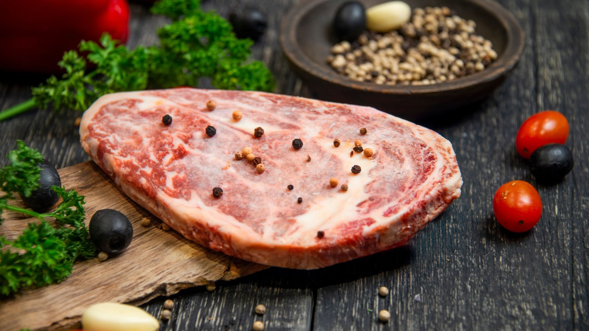
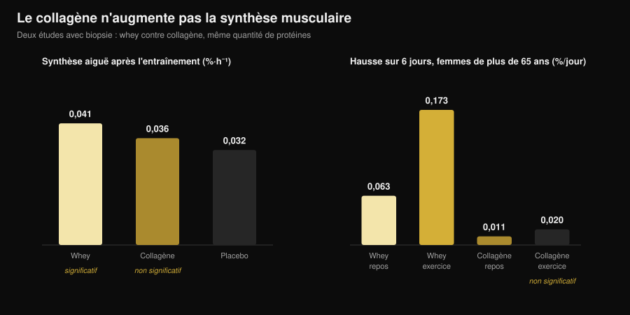
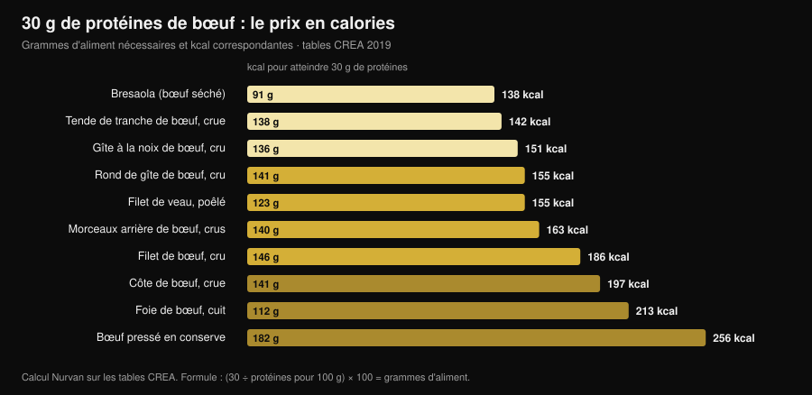

Beef protein : la protéine de bœuf vaut-elle la whey ?
Les recherches sur « beef protein powder » ont grimpé de 467 % et le pot promet la chose la plus logique du monde : si le muscle c'est de la viande, mange de la viande. Sur le papier, ça tient, et la plus grande méta-analyse donne raison au bœuf — il fait jeu égal avec la whey. Le problème, c'est que « beef protein » sur une étiquette indique de quel animal vient la poudre, pas de quelle partie. Et cette différence sépare un complément qui marche d'un complément qui ne fait rien.

En bref
- Face à la whey, c'est une égalité. Méta-analyse de 7 essais et 270 personnes : aucune différence entre protéine de bœuf et whey sur la masse maigre (différence standardisée −0,01), la masse grasse (0,07) ou les protéines totales ingérées (0,04).
- Face à l'absence de complément, en revanche, le bœuf gagne. Par rapport à ceux qui ne prennent rien, il augmente la masse maigre (0,34) et la force du bas du corps (0,40). Mais c'est l'effet « plus de protéines dans la journée », pas « plus de bœuf ».
- Le mot qui compte sur l'étiquette, c'est collagène. Dans les poudres issues du collagène, la synthèse protéique musculaire ne bouge pas : chez des femmes de plus de 65 ans, sur six jours, la whey l'a augmentée de 0,173 %/jour dans la jambe entraînée, le collagène de 0,020 — indiscernable du départ.
- Et l'étiquette n'a pas toujours raison. Une analyse italienne de cinq compléments sportifs du marché a trouvé des cas où les acides aminés réellement présents ne correspondaient pas à ceux déclarés par le fabricant.
- Le vrai avantage du bœuf, c'est le fer. Chez des triathlètes masters, dix semaines de protéine de bœuf ont fait passer la ferritine de 117 à 150 ng/mL ; la whey et les glucides, non.
Pourquoi tout le monde parle de beef protein
Le raisonnement qui vend le produit est simple et intuitif : le muscle est fait de protéines animales, la viande rouge est la protéine animale par excellence, donc une poudre de bœuf devrait être la voie la plus directe vers le muscle. S'y ajoutent trois arguments pratiques : pas de lactose, pas de produits laitiers pour qui suit un régime carnivore ou paléo, et le fer héminique que la whey ne contient pas.
Aucun de ces points n'est absurde. Le problème, c'est que « beef protein » est un nom commercial, pas une spécification technique. Il désigne l'espèce, pas le tissu. Et un bovin fournit deux matières premières très différentes qui peuvent toutes deux devenir de la poudre.
Ce qu'il y a vraiment dans le pot
La première matière première, c'est le muscle : viande maigre hydrolysée ou isolée, avec un profil d'acides aminés essentiels proche du steak que vous mangeriez. C'est elle qu'ont utilisée les études sérieuses sur la beef protein, et elle fonctionne.
La seconde, c'est le collagène : chutes, peau, tendons, tissu conjonctif. C'est de la protéine à tous points de vue, ça compte comme protéine sur le tableau nutritionnel, ça coûte beaucoup moins cher et ça se transforme très bien en poudre. Mais son profil d'acides aminés est déséquilibré — énormément de glycine et de proline, très peu de leucine — et la leucine est l'acide aminé qui allume la construction de protéine musculaire. Une poudre de collagène peut afficher 25 g de protéines par dose et ne pas déplacer la synthèse musculaire d'un millimètre.
Ce n'est pas un soupçon : cela a été mesuré trois fois avec des méthodes différentes. Chez de jeunes adultes, 30 g de collagène après l'entraînement n'ont pas augmenté significativement la synthèse des protéines contractiles par rapport au placebo, alors que 30 g de whey oui (Aussieker et al., 2023). Chez des femmes de plus de 65 ans, six jours de supplémentation : la whey a augmenté la synthèse au repos comme dans la jambe entraînée, le collagène dans aucune des deux (Oikawa et al., 2020). Chez des hommes âgés, 50 g par jour au-dessus de l'apport recommandé ont augmenté la synthèse avec la whey et avec le pois, mais pas avec le collagène (McKendry et al., 2024).

Et même quand la matière première est la bonne, l'étiquette n'est pas une garantie automatique : une équipe de l'université de Milan a caractérisé la fraction protéique de cinq compléments sportifs du commerce et a trouvé des protéines fortement glycosylées et, dans certains cas, des acides aminés ajoutés ne correspondant pas à ceux déclarés, concluant que des tests de lot obligatoires seraient justifiés (Pellegrino et al., 2022).
Ce que dit vraiment la recherche
| Affirmation courante | Verdict | Source |
|---|---|---|
| « Le bœuf construit plus de muscle que la whey » | Démenti : égalité | Valenzuela et al., 2019 |
| « La beef protein ne sert à rien » | Démenti, avec une nuance | Valenzuela et al., 2019 |
| « C'est de la viande, donc une protéine complète » | À nuancer : dépend de la matière première | Oikawa 2020 ; Aussieker 2023 ; McKendry 2024 |
| « La poudre vaut mieux que la vraie viande » | Démenti | Negro et al., 2014 |
| « Sans lactose, le bœuf est le seul choix » | Démenti | Sharp et al., 2018 |
| « Plus on en prend, plus on grossit » | Démenti | McKenna et al., 2021 |
| « Ça aide pour le fer » | Confirmé, dans un contexte précis | Naclerio et al., 2017 |
Affirmation 1 — « Le bœuf construit plus de muscle que la whey »
C'est la comparaison frontale, et la réponse est une égalité nette. Une revue systématique avec méta-analyse a réuni sept essais randomisés totalisant 270 pratiquants de musculation, comparant protéine de bœuf, whey et aucune supplémentation. Entre bœuf et whey, rien ne les sépare : protéines totales ingérées 0,04, masse maigre −0,01, masse grasse 0,07 — des différences standardisées toutes proches de zéro, aucune statistiquement significative.
Les essais individuels disent la même chose. Huit semaines avec 46 g de protéines après l'entraînement : isolat de bœuf, poulet hydrolysé et concentré de whey ont tous augmenté la masse maigre par rapport au départ, la maltodextrine témoin non, et aucune différence de force n'est apparue entre les trois protéines (Sharp et al., 2018).
Affirmation 2 — « La beef protein ne sert à rien »
Ça ne tient pas non plus. Dans la même méta-analyse, par rapport à l'absence de supplémentation, le bœuf a augmenté les protéines ingérées sur la journée (0,68), la masse maigre (0,34) et la force du bas du corps (0,40). Des effets petits, mais réels.
La nuance compte : ce n'est presque certainement pas un effet du bœuf, mais l'effet d'atteindre un apport protéique suffisant. Les auteurs l'écrivent clairement, et un autre essai le rend encore plus net : chez des hommes entraînés en force, 20 g par jour de bœuf hydrolysé, de whey ou de glucides seuls ont produit des gains de force largement comparables, avec des différences minimes sur la composition corporelle (Naclerio et al., 2017). Si votre alimentation apporte déjà assez de protéines, le pot ajoute peu.
Affirmation 3 — « Plus on en prend, plus on grossit »
Dix semaines de musculation chez des adultes d'âge moyen, avec conseil diététique et protéines issues de bœuf maigre : un groupe à environ 1,0 g par kg de poids et par jour, l'autre à environ 1,6. La force maximale a augmenté sur tous les exercices, sans aucun effet de la quantité de protéines (McKenna et al., 2021). Passé un seuil, ajouter de la poudre n'ajoute pas de résultat : c'est le même principe que pour les horaires de prise, abordé dans l'article sur quand prendre ses compléments.
Affirmation 4 — « La poudre vaut mieux que la vraie viande »
Une étude italienne a fait le test le plus direct possible : 135 g de viande maigre en conserve après l'entraînement, soit 20 g de protéines et 1,7 g de lipides, pendant huit semaines. Le groupe qui en mangeait a perdu 1,9 kg de masse grasse et gagné 2,3 kg de masse non grasse ; le groupe témoin sans supplémentation non (Negro et al., 2014). Vraie viande, aucune poudre, même résultat. Les auteurs la décrivent comme « une stratégie nutritionnelle en complément d'autres protéines ou suppléments d'acides aminés » : une option, pas une supériorité.
Affirmation 5 — « Ça aide pour le fer »
Ici le bœuf a un avantage qui lui est propre, et il se voit chez ceux qui en ont besoin. Chez des triathlètes masters de 35 à 60 ans, dix semaines à 20 g par jour de protéine de bœuf ont fait monter la ferritine de 117 à 150 ng/mL, tandis que whey et glucides n'ont produit aucun changement ; dans ce même groupe, l'épaisseur du vaste médial a été préservée, ce qui n'a pas été le cas dans les deux autres bras (Naclerio et al., 2017).
À lire pour ce que c'est : un résultat chez des athlètes d'endurance, une population dont les réserves de fer sont souvent sous tension. Dans la méta-analyse ci-dessus, le bœuf n'a pas augmenté de façon statistiquement significative le fer ingéré par rapport à l'absence de supplémentation. Et si vous suspectez une carence, la seule voie sensée est une prise de sang et un médecin, pas un complément choisi seul.
Le calcul des calories : vraie viande contre poudre
Si l'intérêt de la beef protein est de tirer ses protéines du bœuf, autant savoir ce que coûte la voie viande. À partir des tables alimentaires italiennes CREA, j'ai calculé combien de grammes de chaque morceau il faut pour atteindre 30 g de protéines — la dose utilisée dans la plupart des études de synthèse musculaire — et combien de calories cela représente.

Résultat : la viande maigre n'est pas du tout chère en calories. 138 g de tende de tranche crue apportent 30 g de protéines pour 142 kcal, à peine plus qu'une portion de blanc de poulet. Quatre-vingt-onze grammes de bresaola font la même chose pour 138 kcal. À l'autre bout, le bœuf pressé en conserve demande 182 g et 256 kcal pour la même quantité, et une côte de bœuf 197.
Une dose de poudre se situe en général entre 100 et 130 kcal pour 25-30 g de protéines : en pratique la même chose que la tende de tranche, avec deux différences concrètes. La poudre se transporte, se boit en trente secondes et se dose au gramme ; la viande rassasie, coûte moins cher par gramme de protéines et n'exige aucune enquête sur l'étiquette. Le choix est logistique, pas physiologique.
Comment l'appliquer
- Comptez d'abord les protéines que vous mangez déjà. Si vous êtes autour de 1,6 g par kg de poids et par jour répartis sur les repas, la marge de gain d'une poudre est faible : l'essai 1,0 contre 1,6 g/kg n'a trouvé aucun avantage à monter plus haut.
- Lisez la liste d'ingrédients, pas le devant du pot. Cherchez « collagène », « collagène hydrolysé », « gélatine » ou « protéines bovines hydrolysées » sans autre précision. Si ces mentions arrivent en tête, cette poudre ne remplace pas la whey.
- Cherchez le profil en acides aminés sur l'étiquette. Sans leucine déclarée (à titre indicatif 2-3 g par dose dans les sources à haute valeur biologique), vous n'avez aucun moyen de savoir ce que vous achetez.
- Ne payez pas un surcoût pour « c'est de la viande ». Sur les résultats en salle, bœuf et whey font jeu égal. Si le bœuf coûte plus cher et que vous n'avez pas de raison précise de le choisir, vous n'en avez pas.
- La raison précise existe dans deux cas. Intolérance marquée au lactose ou exclusion des produits laitiers : là, le bœuf est un choix sensé, mais pas le seul — dans la comparaison directe, le poulet hydrolysé a lui aussi fonctionné.
- Pour le fer, passez par les analyses. Ferritine basse, fatigue, charge d'endurance : cela se mesure et se discute avec un médecin, cela ne se gère pas avec un complément acheté en ligne.
Essayez Nurvan — les protéines comptées sur des données réelles
Le volet nutrition de Nurvan s'appuie sur une base officielle de composition des aliments : vous enregistrez ce que vous mangez et vous voyez la quantité de protéines que vos repas apportent réellement, jour après jour. La section compléments garde la trace de ce que vous prenez et quand, et le même profil contient vos charges d'entraînement et les analyses que vous avez importées. La question « ai-je besoin d'une poudre ? » cesse d'être une impression et devient un chiffre.
Questions fréquentes
La beef protein est-elle meilleure que la whey ?
Non, c'est une égalité. La méta-analyse de sept essais randomisés et 270 personnes ne trouve aucune différence entre protéine de bœuf et whey sur la masse maigre, la masse grasse et les protéines totales ingérées (Valenzuela et al., 2019). Choisissez selon la tolérance, le prix et vos préférences.
Comment savoir si une beef protein est faite à partir de collagène ?
Par la liste d'ingrédients et le profil en acides aminés. Les mentions collagène hydrolysé, gélatine ou « protéines bovines hydrolysées » sans autre détail sont le signal ; une leucine non déclarée ou très basse le confirme. Dans les essais avec biopsie musculaire, le collagène n'a pas augmenté la synthèse protéique, ni chez les jeunes ni chez les seniors.
La beef protein convient-elle aux intolérants au lactose ?
Oui, c'est une des bonnes raisons de la choisir, mais ce n'est pas la seule option : dans la comparaison directe sur huit semaines, le poulet hydrolysé a augmenté la masse maigre autant que le bœuf et la whey (Sharp et al., 2018), et les isolats de whey ne contiennent que des traces de lactose.
Poudre de bœuf ou simplement manger de la viande ?
Sur les résultats, la vraie viande tient très bien : 135 g de viande maigre en conserve après l'entraînement ont réduit la masse grasse et augmenté la masse non grasse en huit semaines (Negro et al., 2014). La poudre ne gagne que sur la praticité et la précision du dosage.
À lire aussi
- Protéines végétales ou animales pour les muscles ? — ce qui se passe quand la source protéique change vraiment, mesuré par biopsie.
- Classement des compléments force : ce que dit la science — où se situent les protéines en poudre face à la créatine et à la caféine.
- Quand prendre ses compléments : l'horaire compte-t-il ? — pourquoi la quantité totale pèse plus que le moment de la prise.
Sources
Références bibliographiques récupérées via PubMed. Sujet choisi par la recherche de tendance du 3 novembre 2026 : « beef protein powder » est l'une des requêtes fitness à la plus forte croissance, mais les pages qui l'occupent appartiennent presque toutes à ceux qui vendent la poudre.
- Valenzuela PL, Mata F, Morales JS, Castillo-García A, Lucia A, 2019. Does Beef Protein Supplementation Improve Body Composition and Exercise Performance? A Systematic Review and Meta-Analysis of Randomized Controlled Trials. Nutrients 11(6):1429. PMID 31242624. DOI
- Sharp MH, Lowery RP, Shields KA, Lane JR, Gray JL, Partl JM, Hayes DW, Wilson GJ, Hollmer CA, Minivich JR, Wilson JM, 2018. The Effects of Beef, Chicken, or Whey Protein After Workout on Body Composition and Muscle Performance. Journal of Strength and Conditioning Research 32(8):2233-2242. PMID 28399016. DOI
- Naclerio F, Seijo M, Larumbe-Zabala E, Earnest CP, 2017. Carbohydrates Alone or Mixing With Beef or Whey Protein Promote Similar Training Outcomes in Resistance Training Males: A Double-Blind, Randomized Controlled Clinical Trial. International Journal of Sport Nutrition and Exercise Metabolism 27(5):408-420. PMID 28530448. DOI
- Naclerio F, Seijo M, Larumbe-Zabala E, Ashrafi N, Christides T, Karsten B, Nielsen BV, 2017. Effects of Supplementation with Beef or Whey Protein Versus Carbohydrate in Master Triathletes. Journal of the American College of Nutrition 36(8):593-601. PMID 28910233. DOI
- Negro M, Vandoni M, Ottobrini S, Codrons E, Correale L, Buonocore D, Marzatico F, 2014. Protein supplementation with low fat meat after resistance training: effects on body composition and strength. Nutrients 6(8):3040-9. PMID 25093275. DOI
- Oikawa SY, Kamal MJ, Webb EK, McGlory C, Baker SK, Phillips SM, 2020. Whey protein but not collagen peptides stimulate acute and longer-term muscle protein synthesis with and without resistance exercise in healthy older women: a randomized controlled trial. The American Journal of Clinical Nutrition 111(3):708-718. PMID 31919527. DOI
- Aussieker T, Hilkens L, Holwerda AM, Fuchs CJ, Houben LHP, Senden JM, van Dijk JW, Snijders T, van Loon LJC, 2023. Collagen Protein Ingestion during Recovery from Exercise Does Not Increase Muscle Connective Protein Synthesis Rates. Medicine and Science in Sports and Exercise 55(10):1792-1802. PMID 37202878. DOI
- McKendry J, Lowisz CV, Nanthakumar A, MacDonald M, Lim C, Currier BS, Phillips SM, 2024. The effects of whey, pea, and collagen protein supplementation beyond the recommended dietary allowance on integrated myofibrillar protein synthetic rates in older males: a randomized controlled trial. The American Journal of Clinical Nutrition 120(1):34-46. PMID 38762187. DOI
- Pellegrino L, Hogenboom JA, Rosi V, Sindaco M, Gerna S, D'Incecco P, 2022. Focus on the Protein Fraction of Sports Nutrition Supplements. Molecules 27(11):3487. PMID 35684425. DOI
- McKenna CF, Salvador AF, Hughes RL, Scaroni SE, Alamilla RA, Askow AT, Paluska SA, Dilger AC, Holscher HD, De Lisio M, Khan NA, Burd NA, 2021. Higher protein intake during resistance training does not potentiate strength, but modulates gut microbiota, in middle-aged adults: a randomized control trial. American Journal of Physiology-Endocrinology and Metabolism 320(5):E900-E913. PMID 33682457. DOI
Giammaria Loi est le fondateur de Nurvan. Il pratique la musculation depuis 2012, travaille comme coach et entraîneur personnel certifié FIPE depuis 2013 et compète en powerlifting au niveau national depuis 2018. Chaque article qu'il signe part des études scientifiques pour arriver à ce qui fonctionne vraiment en salle.
Note : contenu informatif, ne remplace pas l'avis d'un médecin ou d'un professionnel.